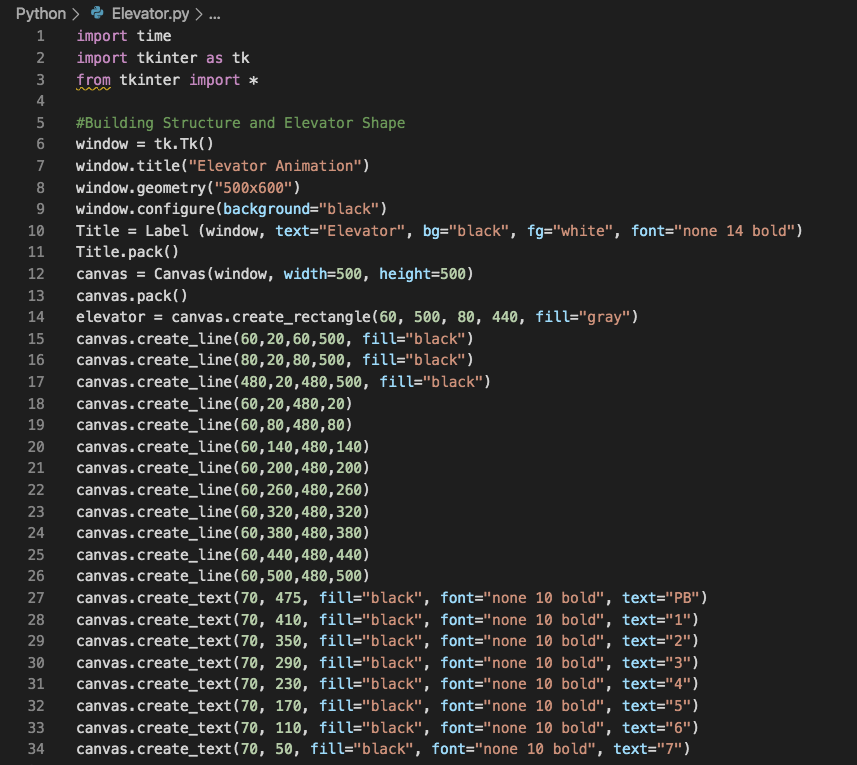

In CS50's Week 5 Problem Set, your task is to implement a spell-checker using a dictionary of words and a hash table. "The challenge ahead is to implement the fastest spell checker you can! By 'fastest,' though, we’re talking actual 'wall-clock,' not asymptotic, time". Initially, they provide you with a program that’s designed to spell-check a file after loading a dictionary of words from disk into memory. Unfortunately, they didn’t quite get around to implementing the loading part. Or the checking part. Both (and a bit more) they leave to you! Here's what I did: ...
In the program that they provide you with, there are three main files, plus some dictionaries to work with and some sample texts and keys to test your code. First is speller.c, a program that implements a spell-checker, outputting a list of all the words misspelled in a file, plus some statistics on the number of words and the time to run each part of your program. The spell-checker works by taking each word in an inputted file, running it through your program, and checking if that word with its specific spelling is found in a hashed dictionary. That dictionary, meanwhile, is implemented in a file called dictionary.c. (As programs get more complex, it’s often convenient to break them into multiple files.) The prototypes for the functions therein, meanwhile, are defined not in dictionary.c itself but in dictionary.h instead. That way, both speller.c and dictionary.c can #include the file. Here's a more detailed explanation of the problem by CS50's own Brian Yu: In short, you need to implement 5 functions: a load function, to load the contents of the dictionary into memory; a hash function (perhaps the most important part of the problem), to perform some sort of operation on a word to determine its hash code, that in this case is going to be the index of our hash table in which we are going to insert that specific word; a size function, to count the number of words in the dictionary; a check function, to determine if a word is misspelled or not using, again, the hash function; and an unload function, to free all the memory previously allocated for our data structure. We'll review my implementation for each of these functions:| Sample Text | My Implementation | Staff's Solution |
|---|---|---|
| Bible | 0.55s | 0.52s |
| Cat | 0.03s | 0.04s |
| La la land | 0.05s | 0.06s |
| Constitution | 0.04s | 0.04s |
| Shakespeare | 0.66s | 0.63s |
I developed this small project back in December, while on vacation, because I had just found out about Graphical User Interfaces (or GUIs for short) and I wanted to get my head around how to use them, so after I found out that one of the most popular GUI modules was Tkinter and learning the basics of it, one of my first ideas to test it was to make a small interactive animation of an elevator in which you could click the buttons for each floor and watch the simple elevator drawing move to your selected floor in real time. Here's what I did: ...
I started by downloading and importing Tkinter, creating a window for the GUI and styling it with basic geometry and colors. I then went on to learn how to create basic lines and shapes, along with text elements, buttons, labels, canvas, and more simple features to include inside my interface's window.  This took care of the "design" of the window, title, and a drawing of a building with a small elevator in it and multiple floors from PB (more commonly L for Lobby) to a 7th floor. The second part was the coding of the buttons for every floor. For this, I created a small space at the bottom of the window labeled "Buttons", where I laid out 8 evenly-spaced-out yellow buttons.